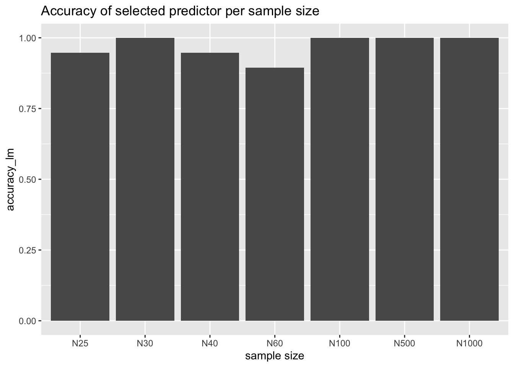

# Load packages library(lme4)library(dplyr)library(ggplot2)options(scipen=0)set.seed(101)# Variable and Dataset preparationN<-c(25, 30, 40, 60, 100 ,500, 1000)# create a data frame to later add which variables were selected predi_selection_lm<-as.data.frame(matrix(NA, nrow =19, ncol =length(N)))predi_selection_step<-as.data.frame(matrix(NA, nrow =19, ncol =length(N)))names(predi_selection_lm)<-c("N25", "N30", "N40", "N60", "N100", "N500", "N1000")names(predi_selection_step)<-c("N25", "N30", "N40", "N60", "N100", "N500", "N1000")#counter to use as index for table predi_selection (loop)a=1#loop over different N (sample size)for(iinN){# Simulation datasetx1<-runif(i, 0, 10)x2<-runif(i, 0, 10)x3<-runif(i, 0, 10)x4<-runif(i, 0, 10)x5<-runif(i, 0, 10)x6<-runif(i, 0, 10)x7<-runif(i, 0, 10)x8<-runif(i, 0, 10)x9<-runif(i, 0, 10)x10<-runif(i, 0, 10)x11<-runif(i, 0, 10)x12<-runif(i, 0, 10)x13<-runif(i, 0, 10)x14<-runif(i, 0, 10)x15<-runif(i, 0, 10)x16<-runif(i, 0, 10)x17<-runif(i, 0, 10)x18<-runif(i, 0, 10)x19<-runif(i, 0, 10)err<-runif(i, 0, 5)data<-cbind(x1,x2,x3,x4,x5,x6, x7, x8, x9 ,x10, x11, x12, x13, x14, x15, x16, x17, x18, x19, err)data<-as.data.frame(data)# generate y values.y<-30+0.4*x1+1*x2+2.3*x3+0.7*x4+0.2*x5+1*x6+2*x7+3*x8+1.5*x9+0.5*x10+err# add generated y values to data framedata_2<-cbind(data, y)# Modelling with all variables as predi.mod<-lm(y~x1+x2+x3+x4+x5+x5+x6+x7+x8+x9+x10+x11+x12+x13+x14+x15+x16+x17+x18+x19, data =data_2)summary(mod)#########################lets try step function########################## use step function and save final model as stepwise_modelstepwise_model<-step(mod)# Extract p-val: lmp_val_lm<-(summary(mod)$coefficients[,4])p_val_lm<-p_val_lm[2:20]#take out intercept# Extract p-val: stepp_val_step<-summary(stepwise_model)$coefficients[,4]p_val_step<-p_val_step[2:20]#take out intercept# Store value: lm predi_selection_lm[a]<-ifelse(p_val_lm<0.05, 1, 0)#store values for step different, because summary output dosen't include all variable like in lm p_val_step<-na.omit(ifelse(p_val_step<0.05, 1, 0))#remove selected pred. without 0.05p_val_step<-p_val_step[!p_val_step%in%0]# save the names of all selected coefficients as coescoes<-names(p_val_step)# create dummy var with all possible variables dummy_var<-c('x1','x2','x3','x4','x5','x6','x7','x8','x9','x10','x11','x12','x13','x14','x15','x16','x17','x18','x19')# which out of all possible variable have been selected? selected_coe<-ifelse(dummy_var%in%coes, 1,0)predi_selection_step[a]<-selected_coe#increase counter by onea=a+1}# Summary accuracy predictors selectiontrue_pred_dummy<-c(1,1,1,1,1,1,1,1,1,1,0,0,0,0,0,0,0,0,0)#dummy code for the existing predictor # new data frame to compare true predi. to selected predi.predi_accuracy_lm<-data.frame(matrix(NA, nrow =19, ncol =length(N)))names(predi_accuracy_lm)<-c("N25", "N30", "N40", "N60", "N100", "N500", "N1000")predi_accuracy_step<-data.frame(matrix(NA, nrow =19, ncol =length(N)))names(predi_accuracy_step)<-c("N25", "N30", "N40", "N60", "N100", "N500", "N1000")#if all correct than coloumn all 1. for(jin1:length(N)){predi_accuracy_lm[j]<-ifelse(predi_selection_lm[j]==true_pred_dummy, 1,0)predi_accuracy_step[j]<-ifelse(predi_selection_step[j]==true_pred_dummy, 1,0)}
Now lets visualize these results
Code
# final data frame used for visualizationsample_s<-c("N25", "N30", "N40", "N60", "N100", "N500", "N1000")summary_accuracy<-data.frame(cbind(sample_s,rep(NA, times =length(sample_s)),rep(NA, times =length(sample_s))))names(summary_accuracy)<-c("sample_s", "accuracy_lm", "accuracy_step")for(iin1:nrow(summary_accuracy)){summary_accuracy[i,2]<-mean(predi_accuracy_lm[,i])summary_accuracy[i,3]<-mean(predi_accuracy_step[,i])}summary_accuracy$accuracy_lm<-as.numeric(summary_accuracy$accuracy_lm)summary_accuracy$accuracy_step<-as.numeric(summary_accuracy$accuracy_step)ggplot(data =summary_accuracy,aes(x=factor(sample_s, level =c("N25", "N30", "N40", "N60", "N100", "N500", "N1000")) , y =accuracy_lm))+geom_bar(stat="identity")+xlab("sample size")+labs(title ="Accuracy of selected predictor per sample size")

This is the accuracy of the normal lm function with all predictors used.
Code
ggplot(data =summary_accuracy,aes(x=factor(sample_s, level =c("N25", "N30", "N40", "N60", "N100", "N500", "N1000")) , y =accuracy_step))+geom_bar(stat="identity")+xlab("sample size")+labs(title ="Accuracy of selected predictor per sample size")
This is the accuracy of the step function default = backwards selection (starting with full model: all predictors) .
Summary:
especially with low sample size N25 step function seems to perform less well than normal lm function
with increasing sample size both perform well and use all relevant predictors